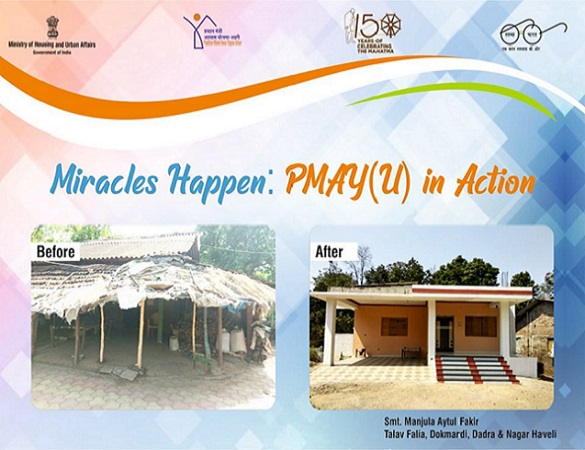

प्रधानमंत्री आवास योजना (शहरी) अभियान हे 25 जून २०१५ रोजी सुरू झाले जे सन २०२२ पर्यंत शहरी भागातील सर्वांसाठी घरे उपलब्ध करुन देण्याचा हेतू आहे. मिशन राज्य / केंद्रशासित प्रदेश (केंद्रशासित प्रदेश) व केंद्रीय नोडल एजन्सी (सीएनए) मार्फत अंमलबजावणी करणार्या संस्थांना केंद्रीय सहाय्य प्रदान करते. ) सुमारे १.१२ कोटींच्या घरांच्या मान्यताप्राप्त मागणीस पात्र असलेल्या सर्व पात्र कुटुंबांना / लाभार्थ्यांना घरे प्रदान करण्यासाठी. PMAY(U) मार्गदर्शक सूचनांनुसार, आर्थिकदृष्ट्या कमकुवत भागासाठी (ईडब्ल्यूएस) घराचे आकार 30 चौरस मीटर इतके असू शकते. कार्पेट एरिया, तथापि मंत्रालयाच्या सल्लामसलत आणि मंजुरीनुसार घरे आकार वाढविण्याची लवचिकता राज्ये / केंद्रशासित प्रदेशांना आहे.
पूर्वीच्या योजनांच्या विपरीत ईडब्ल्यूएस आणि एलआयजी मधील महिलांच्या सक्षमीकरणाच्या दिशेने सरकारच्या या प्रयत्नांच्या अनुषंगाने, पीएमएवाय (यू) ने या अभियानांतर्गत कुटुंबातील महिला प्रमुखांना घराची मालक किंवा सह-मालक होण्याची अनिवार्य तरतूद केली आहे. पीएमएवाय (नागरी) चे कार्यक्षेत्र खालील चार पर्यायांद्वारे मोठ्या संख्येने लोकांच्या उत्पन्नावर, वित्त आणि जमिनीच्या उपलब्धतेवर अवलंबून राहण्यासाठी पर्याय वापरले जातात.